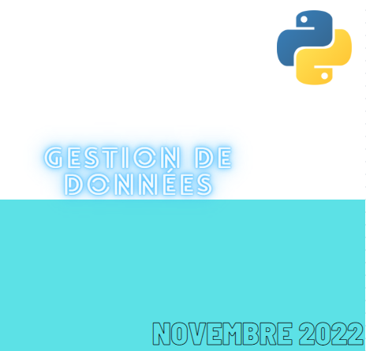
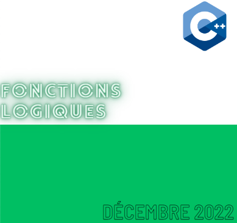
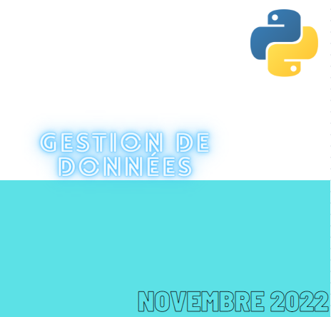
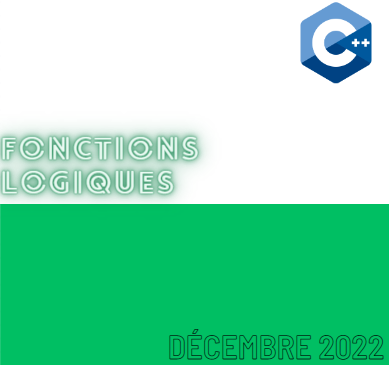

C++ est un langage qui est plutôt orienté objet. C'est à dire qu'il est utilisé
pour créer des applications mobiles ou des jeux vidéos par exemple. C++ est créer à partir du langage C
Ainsi ce langage peut être intégré sur la plupart des microprocesseurs modernes.
Html est un langage utilisé pour la création de pages webs, si on souhaite créer
un site web, HTML va créer la structure et insérer les éléments et le CSS va permettre de modifier l'apparence
de ces éléments. Ainsi pour créer un site web de base, ces deux langages sont indispensables mais il suffit juste
du HTML pour créer une simple page web.
Python est un langage de programmation interprété, multiparadigme et multiplateformes.
C'est un langage excellent pour s'initier au développement. Il favorise la programmation inpérative structurée,
fonctionnelle et orientée objet.Python ç une syntaxe qui est conçue pour être lisible et directe
Json est un langage léger d'échange de données textuelles.
Sur ordinateur, ce format se génère et s'analyse facilement. De plus ce langage est aussi simple
et à une structure en aborescence. Ce langage peut être utilise pour gérer des bases de données comme
les sauvegarder par exemple
Linux est un système d'exploitation Open source est gratuit,
l'avantage de ce système est qu'il est beaucoup plus sécurisé que Windows et que tout le monde
peut modifier et redistribuer le code source de linux. Il permet de réaliser de grandes choses
en réseau informatique en y insérant des protocoles tel que SSH, DHCP, Apache, etc..
Javascript est un langage qui permet de créer du contenu dynamique,
il permet aussi de réaliser des animations complexes que ça soit du texte, image ou vidéo sur une page web.
Utiliser javascript est très utile sur un site web si on veut qu'il y'ait des interactions avec un utilisateur.


 


